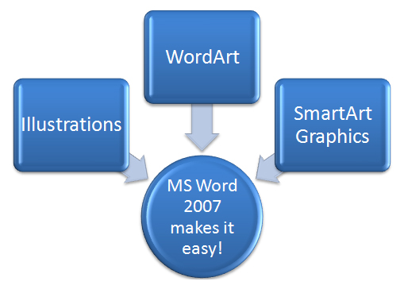

Project 3: Documents for Personal and Business Use
Training Room 3: Graphics
You have probably already used word-processing software to create posters and title pages for your school projects and community activities. Now it’s time to bring your documents to life by enhancing them with graphics, WordArt and Microsoft Word’s SmartArt. With Microsoft Word 2007 it is easy to create eye-catching, visually appealing, professional-looking documents that get great results.

Microsoft product screen shot(s) reprinted with permission from Microsoft Corporation.
In this training room you will
- learn how to modify bullets to create checklists
- create eye-catching SmartArt graphics
- create custom letterheads and stationery templates that stand out
- create professional-looking newsletters
- practise creating stunning displays
- read and watch demonstrations to learn about using graphics
- use the software to complete four practice activities
- use Help menus and online references for software assistance when you need it
- save practice activities in your INF2050: WP 2: Graphics folder
- check your work using provided exemplars and answer keys